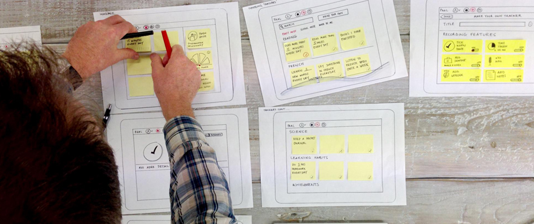
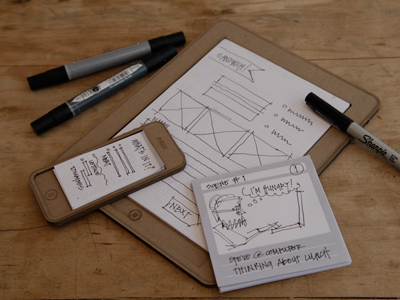
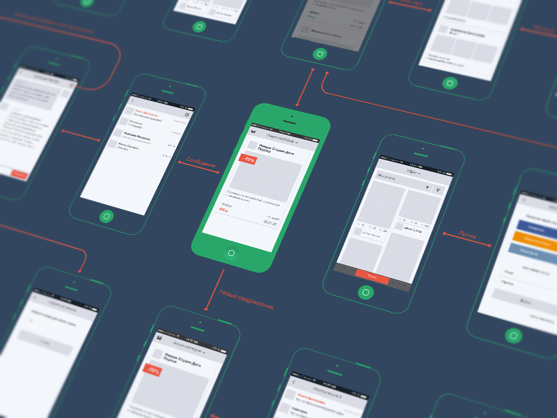
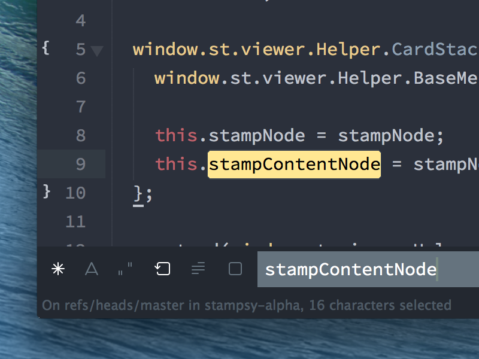
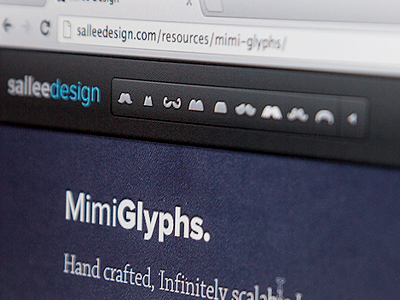
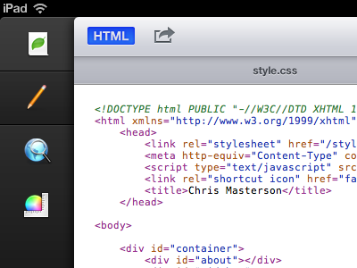
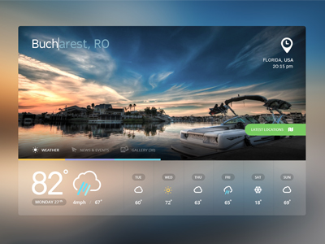
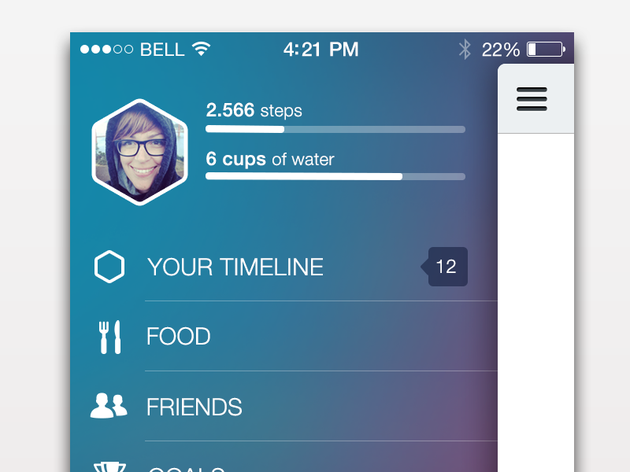

Intro to prototyping
About me
My name is Tyler Merry
follow the presenter @tyler_merry
a little more about me
I have worked for a couple companies...


Pottery Class
Well what IS prototyping?
- Design
- Build
- Test
- Learn
Prototyping Tools
- Paper
- Native App
- HTML
Paper prototype


-
Pros
- Quick & easy to make
- Users don’t get bogged down with visual design
-
Cons
- Can’t use remotely
- One user at a time
- Flows, but not animations
Native app


-
Pros
- Real feeling
- Testable interactions
- Easy to distribute
-
Cons
- Hard to make
- Changes can take a while
HTML


-
Pros
- Quick to build
- Testable interactions
- Tell a story
-
Cons
- Semi-Hard to make
- Users will critique designs
Things to focus on


-
Tell a story
- Functionality can be faked
- What do people want?
- Functioning weather vs icons
-
Stay focused on a goal
- What are you even saying?
Things to avoid
-
Getting caught up in content details
- Dummy content is okay!
-
Trying to be perfect
- Its okay to have mistakes!
- Be ready to talk around any problems that may arise!